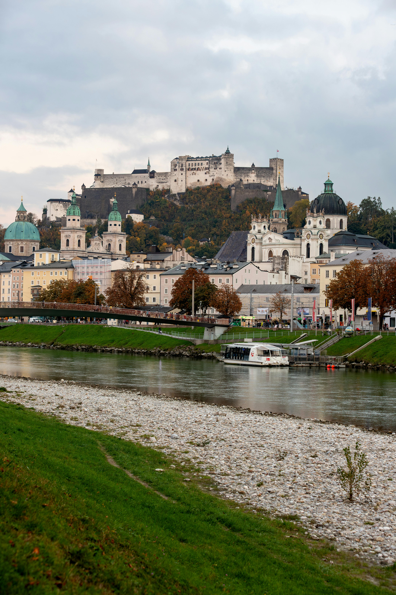
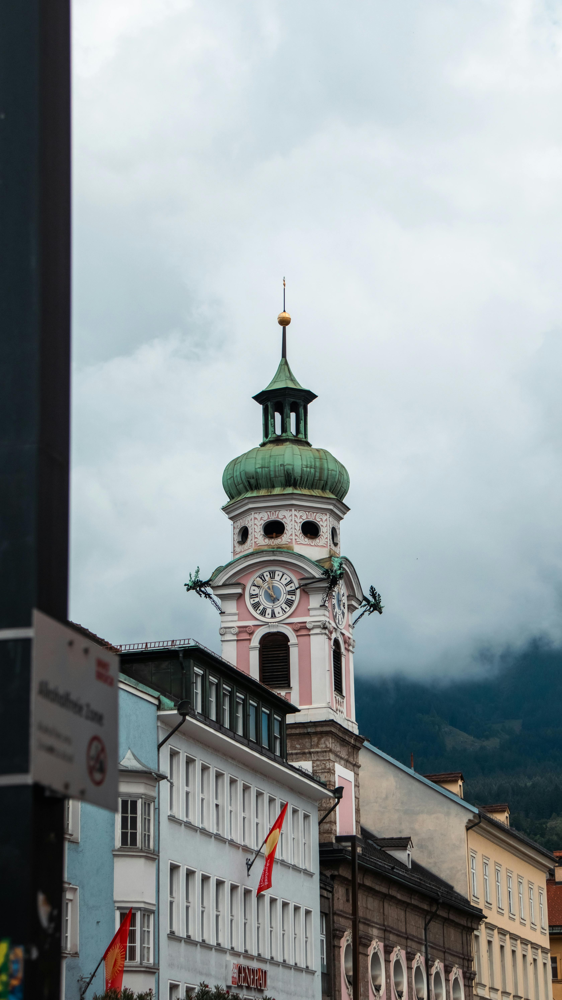
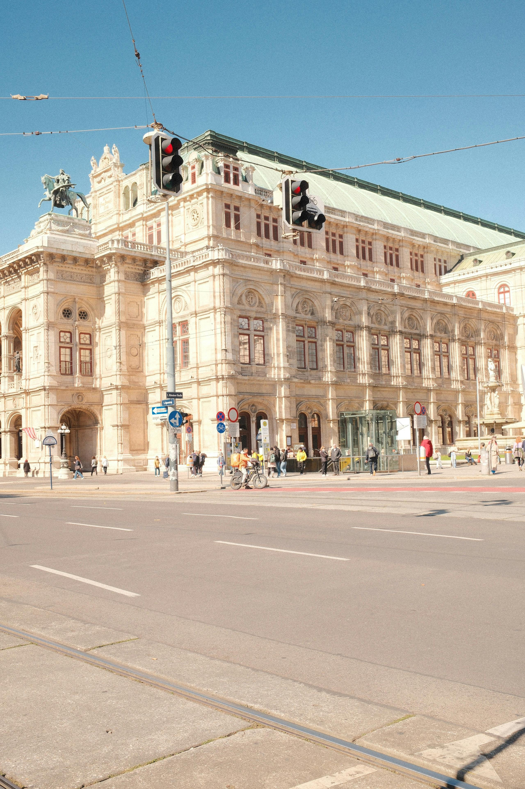
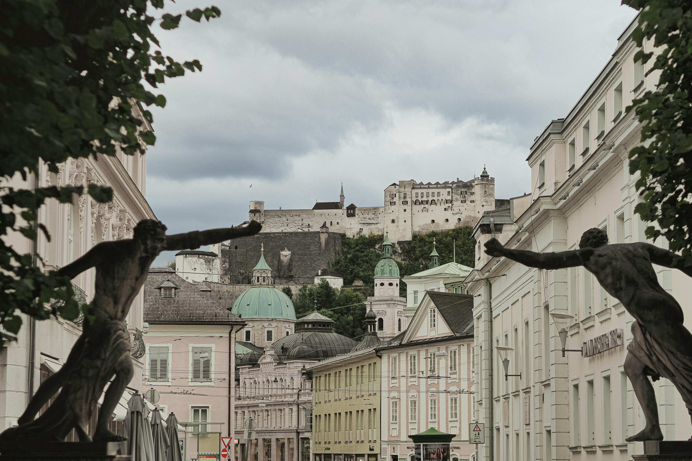
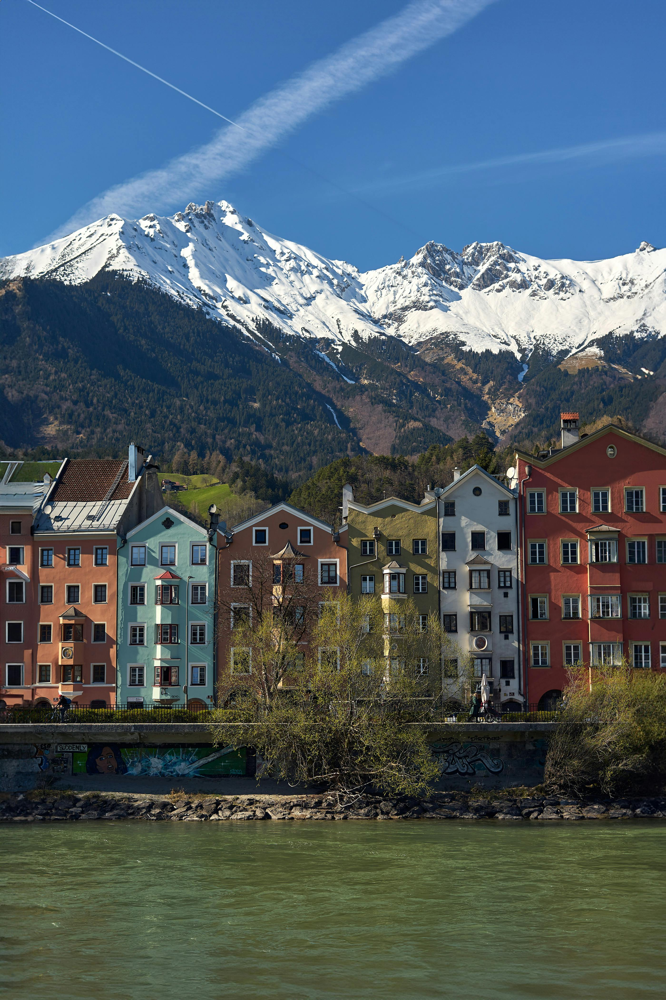
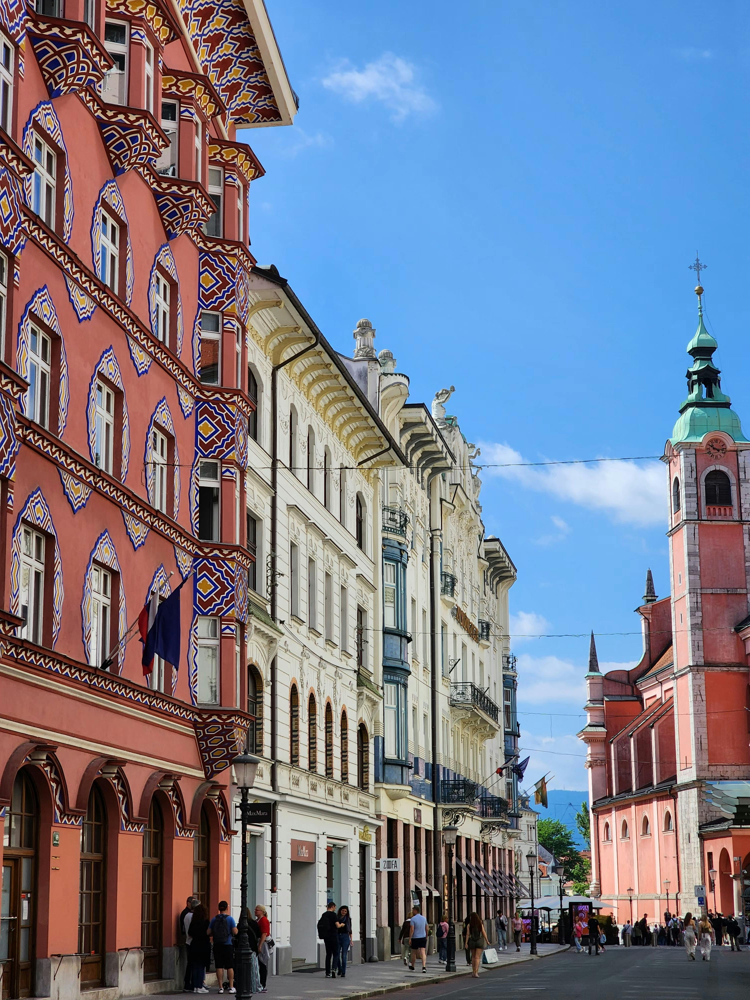
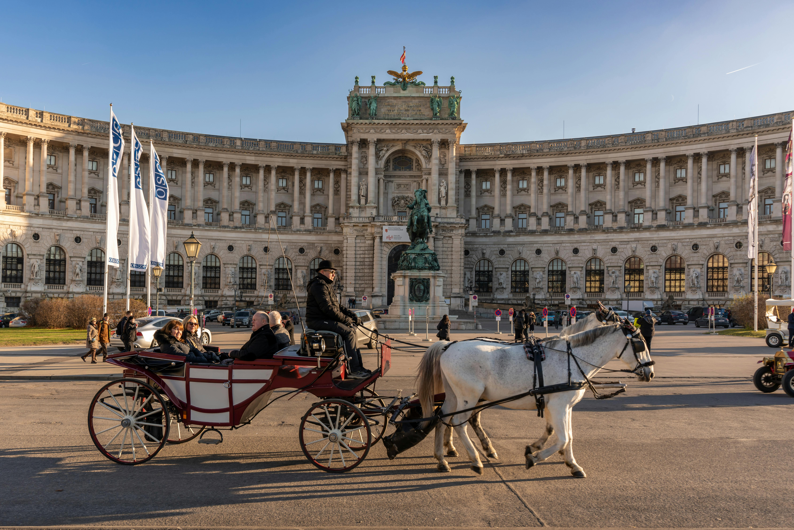
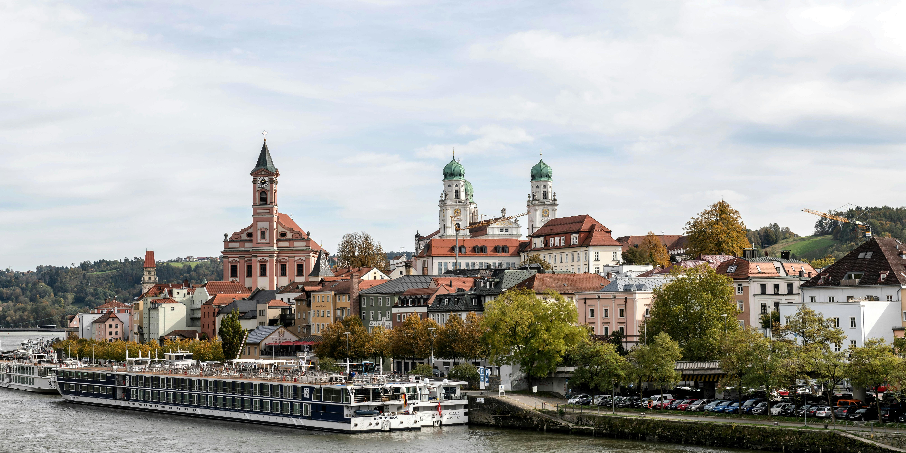

Nicola first visited Austria on an interrail trip in 2007 and returned in 2010 — and between the two visits she fell completely in love with the country. Vienna's imperial grandeur and world-class concert halls, the Mozart-saturated beauty of Salzburg, the jaw-dropping Alpine scenery of Innsbruck and the quieter charms of Linz make Austria one of the most culturally rich and visually spectacular countries in Europe. It is a place that gives you a lot wherever you look.
Vienna is one of the great cities of the world and it knows it — but wears that knowledge with a quiet, unhurried confidence rather than arrogance. The Ringstrasse boulevard, lined with some of the most magnificent public buildings in Europe, sets the tone immediately. The Kunsthistorisches Museum, the Natural History Museum, the Opera House, the Burgtheater — all within walking distance of each other, all extraordinary.
Nicola attended a classical music concert during her time in Vienna — and it was one of those travel experiences that simply cannot be replicated anywhere else. Hearing Beethoven or Mozart performed in one of the world's great concert halls in the city where that music was written and first performed is something that gets under your skin in a way that is very hard to explain to someone who hasn't experienced it. It is completely worth doing and should be on every visitor's itinerary.
The Viennese café culture is another world entirely — a UNESCO Intangible Cultural Heritage and rightly so. Sitting in a grand old Kaffeehaus with a Melange and a slice of Sachertorte, reading a newspaper on one of the provided wooden holders, watching the city drift by at its own unhurried pace — it is one of the great simple pleasures of European travel.


Salzburg is compact, impossibly pretty and absolutely saturated in Mozart — and we mean that in the best possible way. The city wears its most famous son's legacy with enormous pride and enormous charm. Mozart's birthplace on Getreidegasse, the Mozarteum concert hall, the Mozart Residence — the museums are genuinely fascinating and give you a real sense of the prodigy who grew up in these streets.
But Salzburg is much more than Mozart. The old town — a UNESCO World Heritage Site — is one of the finest in Central Europe, a dense tangle of baroque architecture, narrow lanes, ornate churches and beautiful squares all presided over by the Hohensalzburg Fortress sitting magnificently on the hill above. The fortress is one of the best-preserved medieval castles in Europe and the views from the top across the city and the Alps beyond are simply stunning.
The setting alone would make Salzburg worth visiting — the city sits in a valley with the Alps rising dramatically on all sides, giving it a natural grandeur that even the most jaded traveller finds hard to ignore. Add the architecture, the culture, the music and the food and you have one of the most rewarding city breaks in Europe.


Innsbruck stopped us completely in our tracks. It is one of those places where you step off the train, look up and immediately reach for your camera — the combination of a beautifully preserved medieval old town and the dramatic snow-capped Alpine peaks rising directly behind the rooftops is unlike anything else in Europe. It is genuinely, spectacularly beautiful.
The Golden Roof — the Goldenes Dachl — is the city's most iconic landmark, a late Gothic oriel window covered in 2,657 gilded copper tiles that catches the light in a way that makes it look impossibly glamorous against the mountain backdrop. The Maria-Theresien-Strasse is one of the finest streets in Austria, lined with baroque palaces and coloured facades with the Nordkette mountains as a constant companion at the far end.
Innsbruck has hosted the Winter Olympics twice — 1964 and 1976 — and the ski culture is woven into the city's DNA. Even in summer the mountains are accessible by cable car, offering extraordinary views across the Inn valley and the Tyrolean Alps. It is a city that makes you want to stay much longer than planned.


Linz tends to get overlooked by visitors who rush from Vienna to Salzburg without stopping — and that is a genuine shame because it is a city well worth a day or two. Sitting on the Danube between Vienna and Salzburg, Linz has reinvented itself in recent decades from an industrial city into one of Austria's most vibrant cultural capitals.
The Ars Electronica Center — a museum dedicated to the intersection of art, technology and science — is one of the most innovative museums in Europe and alone is worth the detour. The old town has a beautiful main square, the Hauptplatz, which is one of the largest baroque squares in Central Europe and is genuinely impressive. And the Linzer Torte — said to be the world's oldest cake recipe — is something every visitor owes it to themselves to try.
It is a city that rewards curiosity and punishes the traveller who dismisses it as merely a stop on the way to somewhere else.


Austria is brilliant for guided tours — the country's history, architecture and music culture comes alive with a knowledgeable guide. TourRadar has fantastic Austria tours covering Vienna, Salzburg, the Lakes District and the wider Alpine region.
Disclosure: Affiliate link — if you book through it we may earn a small commission at no extra cost to you.
Book skip-the-line tickets, classical music concerts, Mozart dinner shows, castle visits and city tours across Austria — often at better prices than the door.
Disclosure: If you book through these links we may earn a small commission at no extra cost to you.
Vienna walking tours, Salzburg day trips, Hohensalzburg Fortress tickets, Innsbruck cable car and much more.
Disclosure: If you book through these links we may earn a small commission at no extra cost to you.
Common questions
What to pack for Austria
Austria is a year-round destination — summers are warm, winters are cold and crisp. If you're attending a concert or opera in Vienna, smart dress is expected. Comfortable walking shoes are essential everywhere.
Vienna, Salzburg and Innsbruck all reward serious walking — cobbled streets, castle hills and long museum days mean your footwear matters.
View on Amazon →If you're attending a classical concert or the opera in Vienna, smart dress is expected and appropriate — it adds to the whole experience.
View on Amazon →Stay connected across Austria without roaming charges — essential for navigating between cities and finding those hidden café gems.
View on Amazon →Long museum days and city exploring drain batteries fast — keep yours topped up for maps, photos and concert tickets.
View on Amazon →Austria uses Type F plugs — same as most of continental Europe but different to Ireland. Always pack one.
View on Amazon →Perfect for museum days, castle visits and mountain cable car trips — keeps everything organised and hands free.
View on Amazon →Disclosure: These are Amazon affiliate links. If you buy through them we may earn a small commission at no extra cost to you.
Austria is one of Europe's most rewarding destinations — start with Vienna, add Salzburg, stop in Innsbruck and don't overlook Linz. Book a classical concert in Vienna, walk the Mozart trail in Salzburg and take the cable car above Innsbruck. You'll come home a different person.
Affiliate disclosure: if you book through our links we may earn a small commission at no cost to you. We only recommend trips and experiences we'd be happy to stand over.